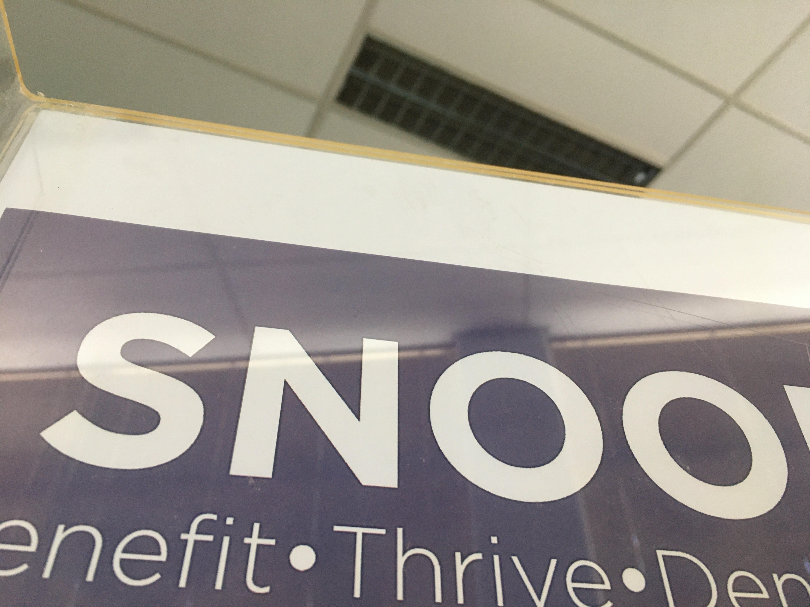

1 / 5

Snood is tall
2 / 5

Snood fell over
3 / 5

Snood did a hand-stand
4 / 5

Snood is dizzy
5 / 5

Snood is purple
|
with the millions of dollars that snood followers have gifted us, we were able to buy snood a present. A sign. A beautiful sign, with much spirit and much idea of the cosmos orbiting around it.
It was of course very happy to pose for some photos Thank you to everyone who has benefited snood so far, and we can't wait to continue collaborating with you in the future.
Do YOU want to donate!!? Well you can't. For now. |